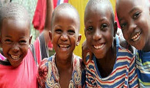

In-patient and Outpatient pain and symptom consultations
PROFESSIONAL AND PERSONAL PEDIATRIC PALLIATIVE CARE
skills: The PAC team engages in the effective evaluation of children with palliative care needs in the inpatient and out-patient setting.




![Dr. Innocent Chidiebere Ugwu (MBBS, DA[WA], FWACS](css/team-img/2.png) Dr. Innocent Chidiebere Ugwu
Dr. Innocent Chidiebere Ugwu
 Dr. Nnaemeka Akubue
Dr. Nnaemeka Akubue
 Dr. Somkenechi Okpala
Dr. Somkenechi Okpala
 Cajetan Alumona
Cajetan Alumona
 Nnenna Nina Chigbo
Nnenna Nina Chigbo
 Nkechi Uzoma
Nkechi Uzoma
 Onukwube Rita Nkechinyere
Onukwube Rita Nkechinyere